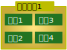
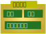

▼使い方
- あなたの目標栄養素算出のためのパラメータを入力（選択）します。
- 素材（料理の材料）ボタンで素材を登録後、料理ボタンで料理を作成します。
- その日の料理をあなたの朝食、あなたの昼食、あなたの夕食で選択します。
- 本日の摂取量に表示されますので、栄養素の過不足を確認することができます。
料理を選択して本日の摂取量を加算していきます。料理は素材を内包します。


例えば、お茶漬けという料理を作る場合、素材にお米・緑茶・お茶漬けの素の3種を登録することで実現します。
（素材の数は1つ以上幾らでも選択できます。ごはんならお米180gで料理に追加します。）